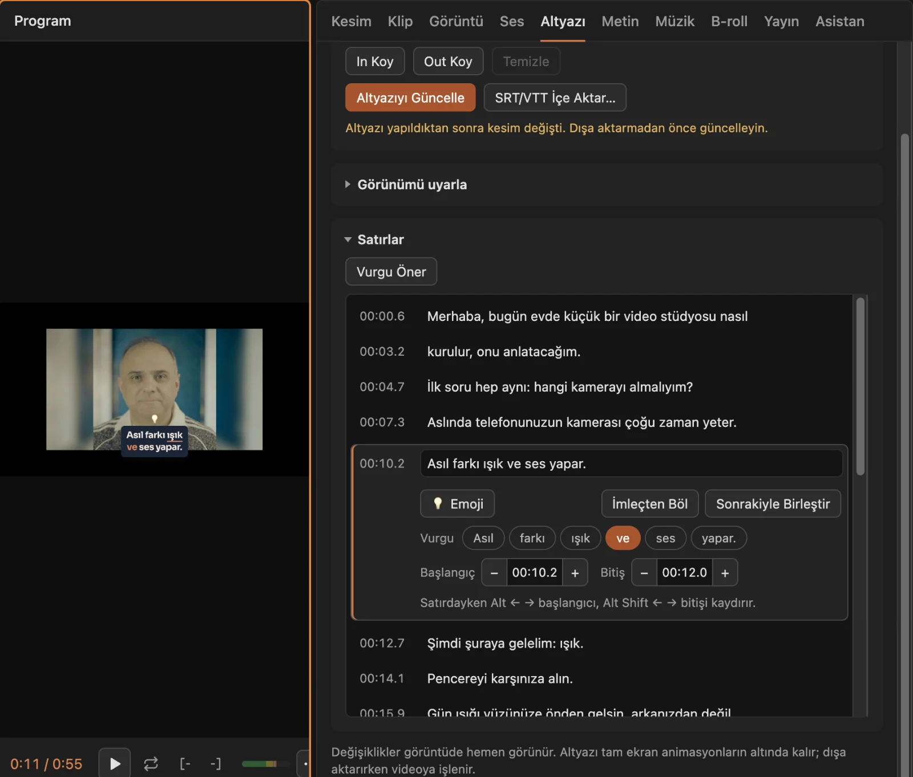

Altyazı
Altyazılar kendi kelimelerinden, seçtiğin görünümle yapılır. Değişiklikler görüntüde hemen görünür, dışa aktarma onları videoya işler.

Altyazı yap
- Görünüm seçGörünüm altında hazır görünümlerden birine tıkla. Resimleri senin karende örnek bir satır gösterir. Yazı tipi, Görünümün kendi yazı tipi'ni korur ya da seninkilerden birini alır (Yazı Tipi Ekle…).
- YapAltyazı Yap'a bas. In ve Out koyduysan yalnızca o aralığın altyazısı yapılır; dışındakiler kalır.
- Güncel tutAltyazıdan sonra kestiysen sekme söyler: dışa aktarmadan önce Altyazıyı Güncelle'ye bas. Yeniden yapmak altyazı düzenlemelerinin yerine geçer; transkriptteki kelime düzeltmeleri kalır.
Altyazıyı taşımak için görüntüde sürükle.
Görünümü uyarla
Görünümü uyarla'da Renkler (Yazı, Vurgu, Kutu; Görünümün Kendi Renkleri geri getirir), Boyut ve Satır başına kelime var.
Satırlar
Satırlar altında bir satıra tıkla: araçları altında açılır.
- Kelimelerini yerinde değiştir.
- İmleçten Böl ve Sonrakiyle Birleştir.
- Başlangıç −0,1 sn, Başlangıç +0,1 sn, Bitiş −0,1 sn, Bitiş +0,1 sn; satırdayken Alt ← → başlangıcı, Alt ⇧ ← → bitişi kaydırır.
- Vurgulamak için bir kelimeye tıkla. Vurgu biçimi: Vurgu Rengi, Daha Büyük ya da İkisi de.
- Emoji Ekle: satırın üstünde görünür.
Vurgu Öner, öne çıkan kelimeleri yapay zeka modeline sorar; Önerilenleri Vurgula onları alır.

Altyazı içe aktar
SRT/VTT İçe Aktar… elindeki altyazı dosyasını getirir. In ve Out ne olursa olsun dosyanın kendi zamanlarını korur ve altyazı düzenlemelerinin yerine geçer.
Altyazılar tam ekran animasyonların altında kalır. Videoya işlenmiş altyazı yerine bir altyazı dosyası için Altyazı dosyası olarak dışa aktar (Dışa aktarma); başka diller için Çeviri ve seslendirme.